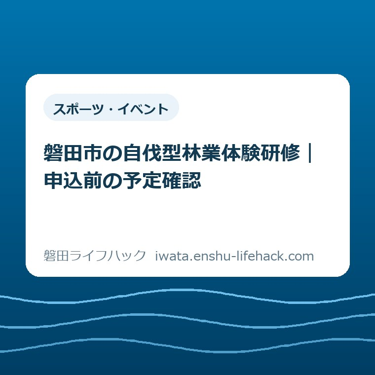
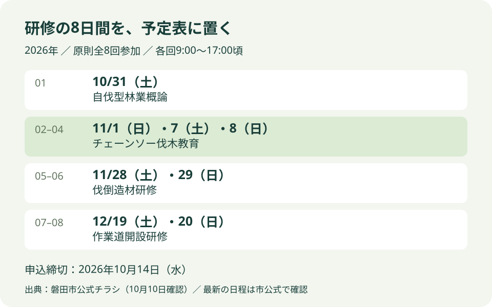
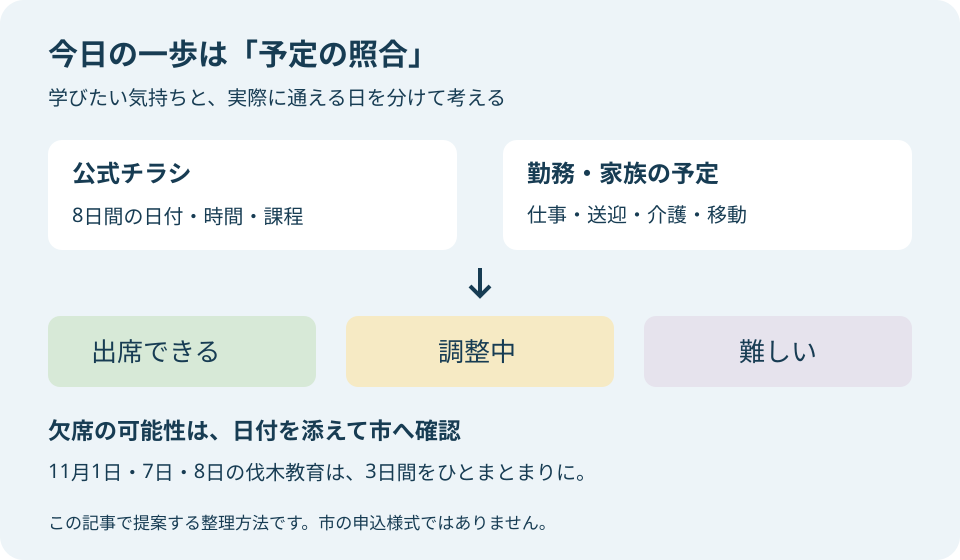

スポーツ・イベント
磐田市の自伐型林業体験研修｜申込前の予定確認

この記事の要点
Q. 家族の山の管理を学びたい。申込前に何を見ればいい？
A. 参加可否は出席予定など個別条件で変わります。磐田市の自伐型林業体験研修2026は10月14日申込締切、原則全8回参加です。今日は公式チラシの8日間を勤務・家族の予定と照合してください。欠席予定があれば市へ確認し、申込みと参加決定を区別します。
山を気にかけながら、仕事も休めない方へ
研修に参加できるかは、出席予定など個別の条件で変わります。磐田市の自伐型林業体験研修2026は、原則として全8回への参加を求めています。家族の山林があるから必ず参加できる、申込みを済ませれば受講が決まる、という募集ではありません。最初にこの条件を置いておきます。
家族の山が気になる方は、研修を探す前から負担を引き受けています。離れて暮らす親に様子を聞く。仕事の休みと天気を見比べる。自分が行けない日に誰が動けるか考える。管理を学びたいという気持ちは、その手間の先にあるはずです。参加を迷うことを、山への関心が薄いと受け取る必要はありません。
この記事を書いているのは、大石浩之（磐田市／不動産業）です。私は、家や土地を引き継ぐ話では、持ち主の気持ちと実際に動ける日を分けて考えたいと思っています。今回も林業の技術を解説するのではなく、仕事を続けながら研修に通うための予定確認に絞ります。
今日の一歩は、公式チラシの8日間を勤務・家族の予定と照合することです。道具を買うことでも、自分の山で作業を始めることでもありません。出席できる日と、まだ調整が必要な日が分かれば、申込みの前に市へ聞く内容も具体的になります。
公式案内で確認した募集条件と申込みの入口
磐田市公式「自伐型林業体験研修2026」は、2026年8月28日更新の案内です。2026年10月10日に、案内本文と添付チラシの両面を確認しました。電子申請の受付期間は2026年8月28日から10月14日まで。申込みは、市公式ページにある申込みフォームから行う案内です。
市の説明では、自伐型林業はチェーンソーや小型重機を使い、山への負荷を抑えながら環境保全と経済性の両立を目指す小さな林業です。研修には基礎を学ぶ回、チェーンソーを扱う教育、山の中での伐倒造材、作業道の開設を学ぶ回があります。家庭の山の管理を考える人にも関わりのある内容です。
対象は市内の山林所有者だけではありません。公式案内は林業に関心がある方など、市内外を問わず参加できるとしています。磐田市に山があり、持ち主本人は市外に住んでいる場合も、住所だけを理由に諦める必要はありません。ただし対象の広さと、実際に受講できるかは別の話です。
定員は15人で、応募が多数の場合は選考です。申込順に席が確定するとは案内されていません。申込みの送信と参加決定を同じ意味にせず、市からの案内を確認してください。選考の具体的な基準や結果連絡の日付は、今回確認した公式ページとチラシには記載を見つけられませんでした。
参加費はテキスト代として3,000円です。チラシ裏面では、第一回研修時に支払うと案内されています。開催場所は磐田市内の施設または山林を予定していますが、各回の集合場所まで確定した一覧は確認できません。自宅から何分で通えるかは、集合場所の案内を受けてから判断する部分です。
全8回の日付を、勤務表の横に並べる
磐田市の添付チラシには、2026年10月31日から12月20日までの8日間が載っています。開催期間の初日と最終日だけを予定帳に書くと、間の6日間を見落とします。各回は9時から17時頃とされ、市公式ページの開催時間は午前9時から午後5時です。
| 日程 | 内容 | 予定表で見ること |
|---|---|---|
| 10月31日（土） | 自伐型林業概論 | 初回の出席と支払い |
| 11月1日（日）・7日（土）・8日（日） | チェーンソー伐木教育 | 3日間すべての出席予定 |
| 11月28日（土）・29日（日） | 伐倒造材研修 | 連続する土日の予定 |
| 12月19日（土）・20日（日） | 作業道開設研修 | 12月の勤務・家庭の用事 |
私は、日程がすべて土日であることを、仕事と両立できる保証とは考えません。土日が勤務日の方もいれば、休日に家族の送迎や介護を担う方もいます。平日に働く方でも、休みの2日間を続けて研修に使えるかは、家庭ごとに違います。曜日だけで参加のしやすさを決めないほうがよいと思います。
予定の照合では、研修の9時から17時頃だけでなく、行き帰りの時間も余白として見ます。開催場所が未確定の段階で、移動時間を一律に30分などと決めることはできません。開始直前まで仕事を入れる、終了直後に送迎を約束する、といった組み方は、集合場所が分かるまで保留にするのが私の提案です。
勤務が月ごとに決まる場合は、10月だけでなく11月と12月の予定も並べます。まだ勤務表が出ていない日は、出席可能と断定せず「調整中」と記録できます。家族の予定も同じで、決まっていないことを空欄のままにせず、未定と書くだけで後からの思い違いを減らせます。

「体験研修」でも、修了証の3日間は別に確認する
チェーンソー伐木教育は、2026年11月1日・7日・8日の3日間です。市の案内は規定日数の3日間に出席すると修了証を発行するとしています。チラシ裏面では、所定の日程・内容を受講した方に「チェーンソーによる伐木等特別教育」の修了証を発行すると説明されています。
「体験」という名称でも、都合のよい一日だけを選ぶ催しとは限らない。ここが、申込前に見落としたくない事実です。研修全体は原則全8回参加で、その中に修了証に関わる3日間があります。8回の参加条件と、教育を修了する条件は、予定表で区別して読む必要があります。
11月7日に仕事が入る可能性がある場合などは、欠席しても修了できると自己判断しないでください。振替、補講、一部参加の可否は、今回確認した資料では分かりません。「この日が出席できない見込みです」と具体的な日付を添え、市の農林水産課に確認する部分です。
家族で交代して出れば全8回を埋められる、という読み方にも根拠はありません。研修へ行く人と、家庭で留守を支える人の分担は考えられますが、受講者を交代できるかとは別です。修了証を希望する本人が、所定の日程と内容を受講できるかを基準に予定を見ます。
この記事では、修了証を得れば自分の山のあらゆる作業を安全に行えるとは言いません。参加の検討と、実際の山林で何を行うかは分ける必要があります。ここで紹介するのは研修の募集条件です。伐採の方法や現場での作業判断は、研修の講師・担当者に確認してください。
3,000円とは別に、通うための準備を数える
公式チラシの持ち物には、作業に適した長袖・長ズボン、滑りにくく足首を保護できる靴、作業用手袋、雨具、昼食・飲み物、筆記用具が挙がっています。ヘルメット、防護ズボン、チェーンソーなどは貸出可能と明記されています。申込前に機械を購入することは求められていません。
私は、テキスト代3,000円だけで参加の負担を見積もらないほうがよいと考えます。移動、昼食、手元にない衣類、家庭の用事の調整もあります。これらに一律の金額を置くことはできません。既に持っている物と、担当者への確認が必要な物に分ければ、不必要な買い足しを避けやすくなります。
貸出可能という案内から、すべての道具を予約なしで借りられるとまでは読めません。サイズや貸出の手順などはチラシに細かく書かれていないため、必要に応じて確認する項目です。自分の道具を持ち込む場合の扱いも、この記事で一律に決めることはできません。
チラシは森林内での転倒や滑落、倒木、チェーンソーなどによる事故の危険を記載しています。講師・スタッフの指示に従うこと、体調不良やけががあれば申し出ることも案内されています。貸出や指導があることと、危険がなくなることは同じではありません。
保険については傷害保険等に加入し、補償には条件があると書かれています。悪天候や現地の状況によっては、中止や内容変更の可能性もあります。その際は申込時に登録した連絡先等へ案内されます。仕事用と家庭用で連絡先を使い分ける方は、自分が確認できる連絡先かを意識してください。
良い点——学ぶ入口と準備の見通しがある
磐田市の研修案内で私が良いと考えるのは、市内外に入口が開かれ、学ぶ内容が4課程で示されている点です。家族の山のために学ぶ人も、林業への関心から検討する人も、何を学ぶ回なのかを読めます。山の管理をすべて家族の経験だけに頼らず、学ぶ機会を探せることには意味があります。
私は、装備の貸出が明記されている点も評価します。関心を持った段階で機械の購入まで考えると、参加するかどうかの判断に別の負担が加わります。何が借りられ、何を持参するかを分けて案内することは、学ぶ前の準備を見通す助けになります。
日程がチラシにまとまっている点も、家族で考える材料になります。単に「秋に研修があります」では、仕事の調整は始められません。日付、内容、時間帯があれば、誰が通い、その間の家庭の用事をどうするかという話まで進められます。
注文したい点——欠席を迷う人の入口も分かりやすく
磐田市の研修案内に私が注文したいのは、原則全8回という条件を、ウェブ本文でも見つけやすくすることです。今回の確認では、本文に全8回の開催は書かれていましたが、「原則全8回の参加」は添付チラシで確認しました。仕事の合間にスマートフォンで見る方には、申込前に知りたい条件だと思います。
私は、欠席予定があるときに何を問い合わせればよいかも、案内に添えてほしいと考えます。一部参加を認めてほしいと先に結論づける話ではありません。修了証の条件を守りつつ、参加を迷う人が具体的な日付を示して確認できれば、問い合わせる側も答える側も話を絞れます。
集合場所や結果連絡の時期など、未確認の項目をすべて欠点と評価するつもりはありません。現地の調整が必要なことも考えられます。ただ、募集資料にない内容を参加者が推測して埋めるのは避けたい。この記事でも分からない点は分からないと残し、市の確認先につなぎます。
家族の山の話と、研修へ通う人の話を分ける
家族の山林についての話し合いと、今回の研修の出席確認は、目的を分けると整理しやすくなります。山の所在や名義の確認を一度に終わらせてからでなければ、研修日程を見られないわけではありません。募集案内の対象と、ご家族の資産の整理を混同しないことが私の提案です。
どの不動産を把握できているかが曖昧なら、別の作業として所有不動産記録証明書と名寄帳の違いを参考にできます。資料の使い分けを整理する記事です。今回の研修への申込みに、その証明書が必要だと案内しているわけではありません。
相続の手続きが気になるご家族には、相続登記と相続人申告登記の違いも別の入口になります。研修に参加することと、名義に関する手続きを終えることは別です。個別の登記や相続の判断は担当する専門家へ確認し、研修をその代わりにしないでください。
予定を話し合うときは、「山をどうするか」という結論よりも、研修日に誰が家庭の用事を担えるかを議題にできます。管理の負担を言葉にする方法は、空き家相談会に向けた家族の相談メモでも紹介しています。家と山では相談先が違っても、困っていることと未確認のことを分ける考え方は使えます。

大石の視点——山を守る気持ちだけで休日は増えない
私が今回の研修を検討する方に伝えたいのは、山を守る気持ちだけで休日は増えない、ということです。制度が立派でも、使う人が動けなければ役に立ちません。まず誰が8回通えるのかを見る。私は、その順番を大事にしたいと思います。これは研修参加の実体験ではなく、土地と暮らしの段取りを考える立場からの意見です。
私は、学ぶ機会があるなら勧めたい気持ちと、既に管理を背負っている人へさらに予定を積みたくない気持ちの間で迷います。参加を勧めるだけなら簡単です。しかし、研修に通う日の仕事や家庭の用事まで消えるわけではありません。受講する本人の時間を数えずに、家族だけで参加を決めるのは避けたいと思います。
私なら、予定表の「調整中」を無理に出席可能へ変えません。休みを取れるか、家族が代わりに動けるか、まだ返事がない事情をそのまま残します。できない日が分かることも、判断材料が増えたということです。受講できない場合を、山の管理を考える努力の不足と結びつけるべきではありません。
対案・結論——今日は8日間と勤務予定を照合する
磐田市の自伐型林業体験研修2026を検討する今日の一歩は、公式チラシを開き、8日間を勤務・家族の予定と照合することです。申込締切は2026年10月14日です。締切だけに目を向けず、10月31日から12月20日まで実際に通う日を見てから、申込みを考えてください。
メモは、日付の横に「出席できる」「調整中」「難しい」のどれかを書くだけで構いません。市への提出書類を増やす提案ではなく、自分の予定を確かめるための方法です。特に11月1日・7日・8日は、チェーンソー伐木教育の3日間としてひとまとまりで確認します。
難しい日が見つかったら、市の農林水産課（0538-37-4913）へ、その日付を伝えて参加条件を確認するためのメモになります。問い合わせの前に家族全員の結論をそろえる必要はありません。ただし、欠席してもよい、振替があるなどと先回りして決めず、担当者の回答を受けて判断してください。
開催日程や費用、募集条件は変更される場合があります。個別の参加可否は市の担当課へ、登記・相続など研修の範囲外の判断は専門家へ確認してください。申込みに進む前の最終確認は、必ず磐田市公式の研修案内と添付チラシで行ってください。
よくある質問
磐田市の自伐型林業体験研修2026について、申込前に迷いやすい条件を整理します。回答は2026年10月10日に確認した募集資料に基づきます。
市外に住んでいても申し込めますか？
磐田市の公式案内は、市内外を問わず参加できるとしています。市内に住んでいることや山林の所有だけに対象を限定していません。ただし原則全8回参加で、定員15人、応募多数の場合は選考です。市外から通う方も、8日間の出席予定と移動を確認し、個別の条件は市の担当課へ問い合わせてください。
8回のうち1日休んでも参加できますか？
公式チラシは原則全8回参加としています。一部参加や振替の可否は、確認した資料では分かりません。特にチェーンソー伐木教育は11月1日・7日・8日の規定3日間と所定の内容が修了証の条件です。欠席予定の日付を市の農林水産課へ伝え、申込前に確認してください。自己判断で修了できるとは考えないでください。
参加費3,000円のほかに何を準備しますか？
3,000円はテキスト代で、チラシでは初回研修時の支払いです。持ち物は作業に適した服装と靴、手袋、雨具、昼食・飲み物、筆記用具です。ヘルメット、防護ズボン、チェーンソー等は貸出可能とされています。貸出の詳細や集合場所は市へ確認し、買い足しや移動にかかる負担は各家庭で見積もってください。
最終的な日程・持ち物・参加条件は、磐田市公式ページと添付チラシで確認してください。
参考にした公式情報
- 自伐型林業体験研修2026／磐田市（2026年8月28日更新、2026年10月10日確認）
- 自伐型林業体験研修2026チラシ・両面／磐田市（2026年10月10日確認）
最終確認日：2026-10-10 ／ 本記事は公表情報と執筆者の見解を分けて記載しています。制度・数値・公開状況は変更される場合があるため、最新情報は磐田市公式ページでご確認ください。

大石浩之／磐田市／不動産業・宅地建物取引士。著者プロフィール